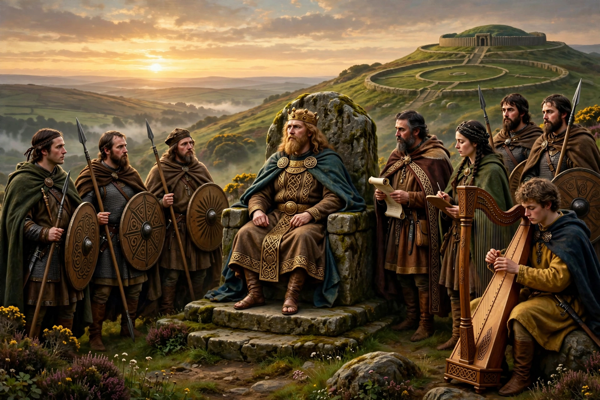

| Cycles of the Kings | |
|---|---|
| Tradition | Irish mythology and legendary history |
| Subject | Legendary kings of Ireland, c. 2nd century BC – 8th century AD |
| Notable kings | Conn of the Hundred Battles, Cormac mac Airt, Niall of the Nine Hostages, Lóegaire |
| Other cycles | Mythological Cycle, Ulster Cycle, Fenian Cycle |

The Cycles of the Kings, also known as the Historical Cycle, is one of the four great groupings of Irish mythology recognised by modern scholars. It comprises tales about the legendary kings of Ireland, from Labraid Loingsech (conventionally placed around the 4th century BC) down to Brian Boru in the 11th century AD, with most stories clustering around kings of the 2nd to 8th centuries. Unlike the Mythological, Ulster and Fenian cycles, it is less a unified cycle than a large body of dynastic and pseudo-historical narrative.
The tales of the kings blend legend, dynastic propaganda and genuine fragments of history. They are concerned with the deeds, virtues, wooings, battles and violent deaths of kings, and often explain place-names and the origins of dynasties. A recurrent theme is the fitness of the king: a just king's reign brings peace, plenty and mild weather (fír flathemon, "the ruler's truth"), while a blemished or unjust king brings blight. Kings in these tales interact with saints as well as with pagans, reflecting the monastic authors who wrote them down.
These stories survive scattered through manuscripts including the Book of Leinster and the Book of Ballymote, and in the great annalistic and genealogical compilations of medieval Ireland, in which dynasties traced their descent from the kings of the tales.